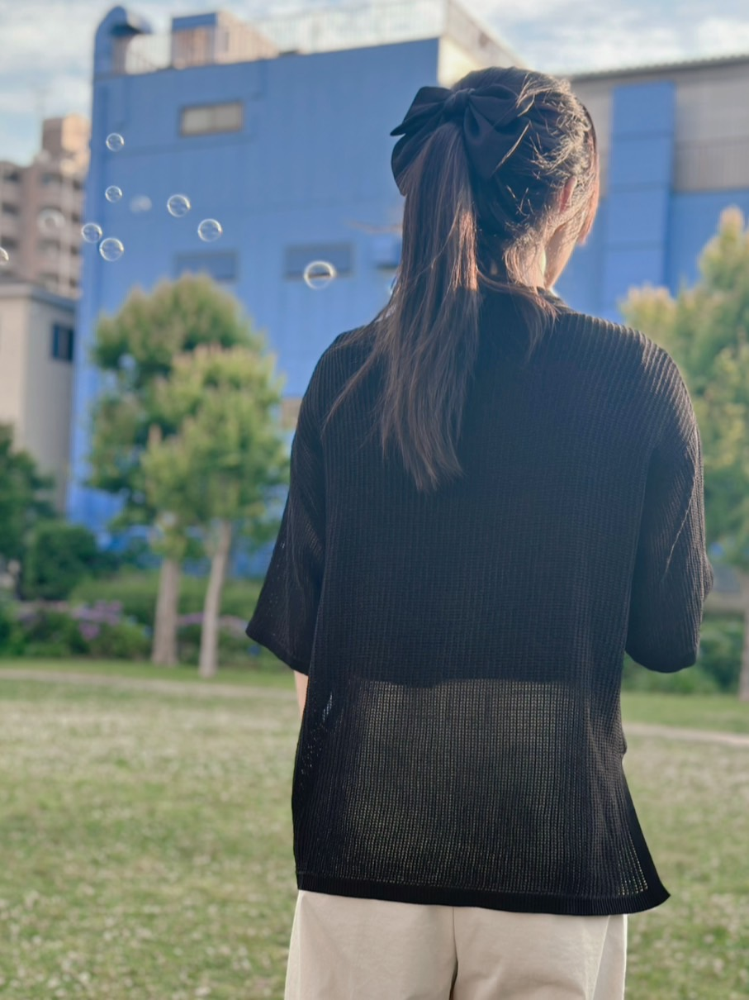
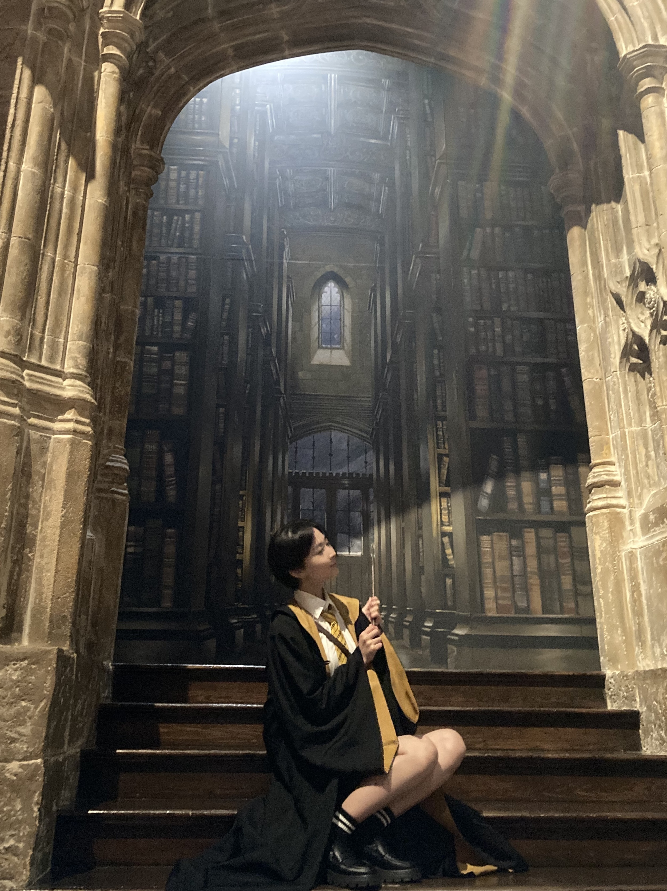

広報部
広報部 のご紹介
パンフレットの作成やSNSでの発信を通じて、大会の魅力や最新情報を全国の生徒会に届けます。

広報部長
小林 ゆい（こばやし ゆい）

西口 沙彩（にしぐち さあや）

村上 陽葵（むらかみ ひまり）

北浦 丈太郎（きたうら じょうたろう）
パンフレットの作成やSNSでの発信を通じて、大会の魅力や最新情報を全国の生徒会に届けます。

広報部長
小林 ゆい（こばやし ゆい）

西口 沙彩（にしぐち さあや）
村上 陽葵（むらかみ ひまり）
北浦 丈太郎（きたうら じょうたろう）